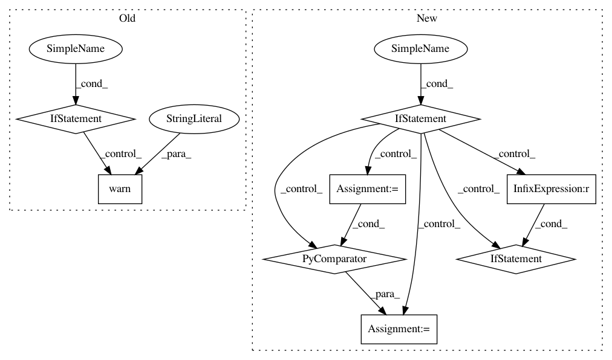

8834dbff5f121e602331b845f9582eafb1c84d6c,hypertools/plot/plot.py,,plot,#Any#Any#Any#Any#Any#Any#Any#Any#Any#Any#Any#Any#Any#Any#Any#Any#Any#Any#Any#Any#Any#Any#Any#Any#Any#Any#Any#Any#Any#Any#Any#,21
Before Change
// align data
if align:
if len(data) == 1:
warn("Data in list of length 1 can not be aligned. "
"Skipping the alignment.")
else:
x = aligner(x)
// find cluster and reshape if n_clusters
if n_clusters is not None:
cluster_labels = cluster(x, n_clusters=n_clusters, ndims=ndims)
x = reshape_data(x, cluster_labels)
if group:
After Change
x = patch_lines(x)
// handle legend
if legend is not None:
if legend is False:
legend = None
elif legend is True and group is not None:
legend = [item for item in sorted(set(group), key=list(group).index)]
elif legend is True and group is None:
legend = [i + 1 for i in range(len(x))]
mpl_kwargs["label"] = legend
// interpolate if its a line plot
if fmt is None or type(fmt) is str:
if is_line(fmt):
if x[0].shape[0] > 1:
x = interp_array_list(x, interp_val=frame_rate*duration/(x[0].shape[0] - 1))
In pattern: SUPERPATTERN
Frequency: 3
Non-data size: 8
Instances
Project Name: ContextLab/hypertools
Commit Name: 8834dbff5f121e602331b845f9582eafb1c84d6c
Time: 2017-06-04
Author: sucharyan@gmail.com
File Name: hypertools/plot/plot.py
Class Name:
Method Name: plot
Project Name: ContextLab/hypertools
Commit Name: a9deec4f02739f0ac0a81c91bcd6b7bdea976876
Time: 2017-06-04
Author: sucharyan@gmail.com
File Name: hypertools/plot/plot.py
Class Name:
Method Name: plot
Project Name: tensorflow/tensorboard
Commit Name: a02e5721ab5babc58e7d41cda5c0aaafe30320d1
Time: 2020-01-22
Author: wchargin@gmail.com
File Name: tensorboard/backend/event_processing/data_provider.py
Class Name: MultiplexerDataProvider
Method Name: read_blob